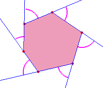

The Sum of Outer Angles of a Polygon
About the applet
What is the sum of the angles?

Applet
Click some points to make a polygon.
Press "Ok" button to close the polygon.
Press "Scale down" button.
What do you find?
The idea was presented by a participant
at theme group T2
(Computer and teaching of math)
on July, 29 1988
in
ICME6
(Sixth International Congress on Mathematical Education)
Budapest, Hungary